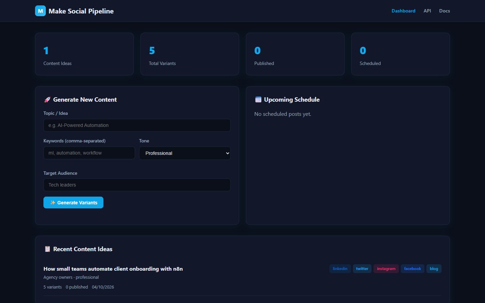
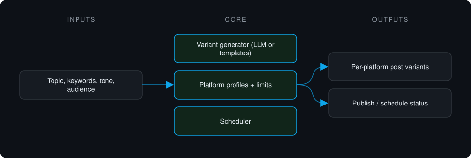
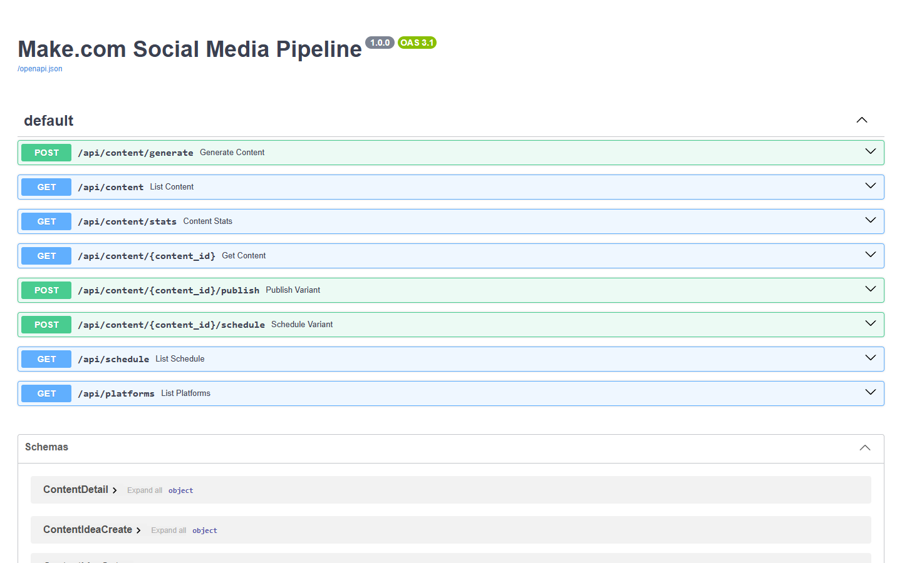

Case study · Private project
Make Social Media Pipeline
Turns one content idea into platform-appropriate post variants for LinkedIn, X, Instagram, Facebook and a blog. Generation is template-based and publishing is mocked in this version.
This is a proprietary project. Source code is private. This page showcases the system's architecture and results.

Problem it solves
Rewriting the same idea five times for five platforms is repetitive. This pipeline generates per-platform variants that respect each platform's limits and tone, then tracks publishing. It is built as the webhook backend for a Make.com scenario: the automation platform handles triggers, and this service holds the logic and data.
Architecture

- A content idea is submitted with keywords, tone and audience.
- Variants are generated per platform within each platform's limits.
- Variants can be previewed, then published or scheduled.
- Status is tracked per variant.
Key features
- Five platform targets from one idea
- Per-platform character and format rules
- Works with or without an LLM key
- Publishing and scheduling pipeline
- Content stats
Tech stack
- Python
- FastAPI
- Webhooks
- SQLAlchemy
- Jinja2
What it does in practice
- Prototype stage: variant generation within each platform's limits works end to end; publishing and scheduling run against a mock client.
Screenshots
Screenshots show the app running on seeded demo data, not client data.
